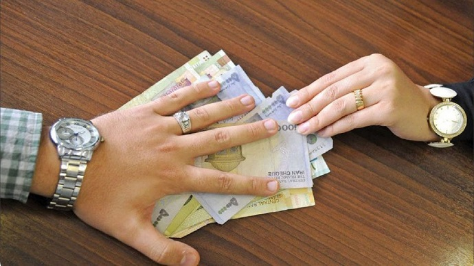
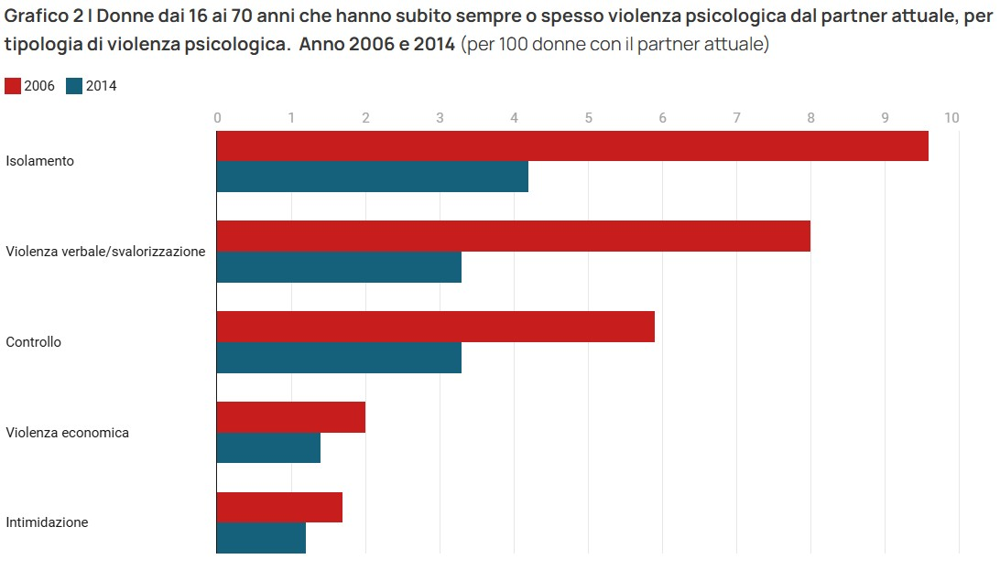

La violenza economica tra cittadini è una forma di abuso che si verifica quando una persona limita o controlla le risorse economiche di un’altra, impedendole di essere indipendente. Secondo l'Istituto Europeo per l'Uguaglianza di Genere, può includere il divieto di lavorare, l’accesso negato al conto corrente, o l’obbligo di giustificare ogni spesa. Secondo WeWorld, è violenza economica anche quando una persona viene esclusa dalle decisioni finanziarie o obbligata a chiedere il permesso per fare acquisti.
Un’indagine realizzata da WeWorld con Ipsos nel 2023 ha rivelato che il49% delle donne italiane ha vissuto almeno un episodio di violenza economica. Tra le donne separate o divorziate, la percentuale sale al 67%. Il 28% ha subito decisioni economiche prese dal partner senza essere consultata. Il 37% non riceve l’assegno per i figli concordato.
Con la sentenza n. 1268 del 13 gennaio 2025, la Corte di Cassazione ha stabilito che la violenza economica è una forma di maltrattamento. Impedire al partner di raggiungere l’indipendenza economica attraverso atti di controllo è considerato reato.
Solo il 59% degli italiani riconosce la violenza economica come un abuso grave. Il 27% crede che questi problemi vadano risolti in famiglia. Il 15% pensa che la colpa sia di comportamenti provocatori da parte delle donne. Il 16% degli uomini e il 6% delle donne ritiene giusto che l’uomo comandi in casa.
Il “reddito di libertà” è un contributo economico destinato alle donne vittime di violenza per favorire l’autonomia. Nel 2020 sono state presentate 3.283 richieste, ma solo 600 contributi sono stati erogati. In regioni come Umbria, Puglia, Emilia-Romagna e Piemonte il tasso di erogazione è stato inferiore al 15%.
Il video “La violenza economica spiegata bene” (Parole in Circolo) descrive situazioni quotidiane in cui una persona viene privata del controllo sul denaro. Alcuni esempi citati sono: impedire al partner di lavorare, obbligarlo a consegnare lo stipendio, controllare ogni acquisto. Tutti questi comportamenti non sono gesti di cura, ma modi per esercitare potere. Come affermato nel video, la violenza economica è “controllare il tempo, le decisioni e il denaro di un’altra persona, senza il suo consenso”. Le vittime spesso non si accorgono subito di subirla, perché viene normalizzata all’interno della coppia.